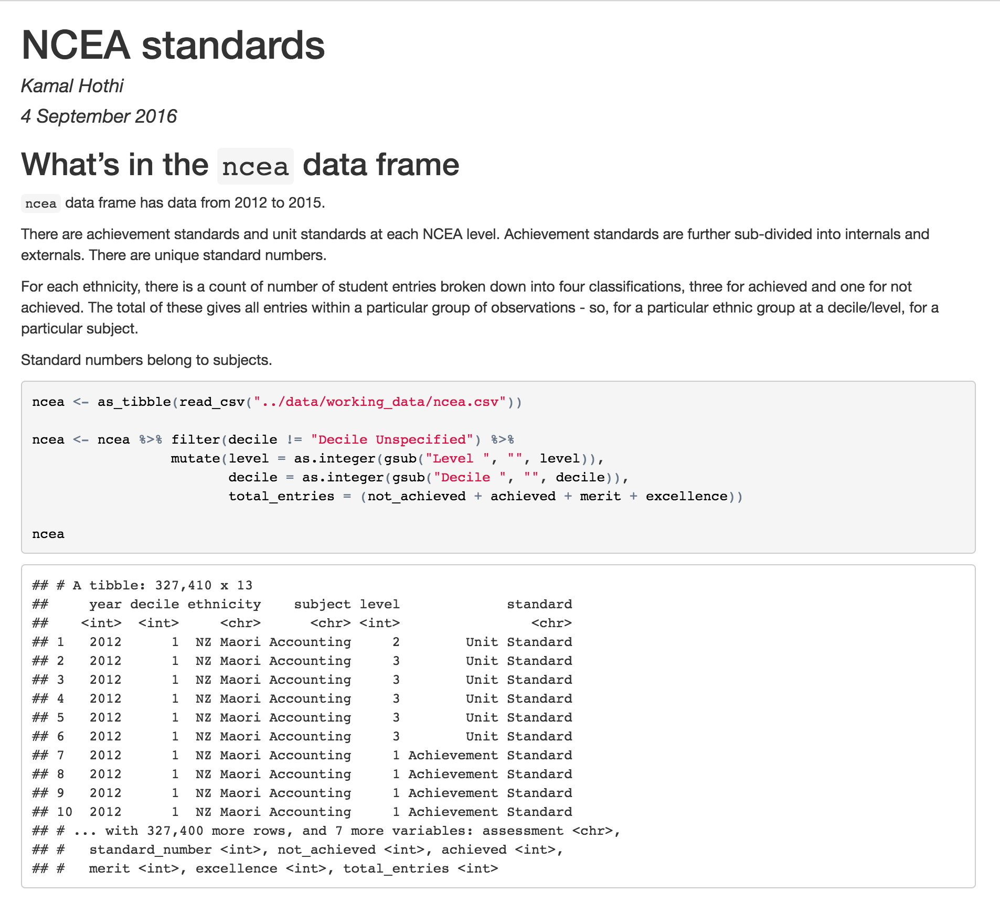
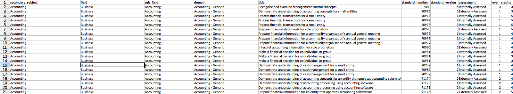
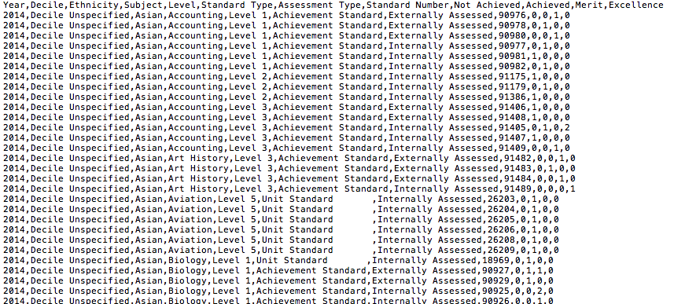
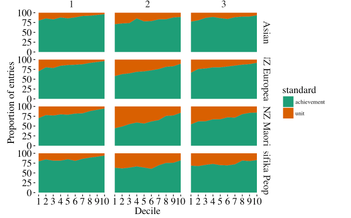
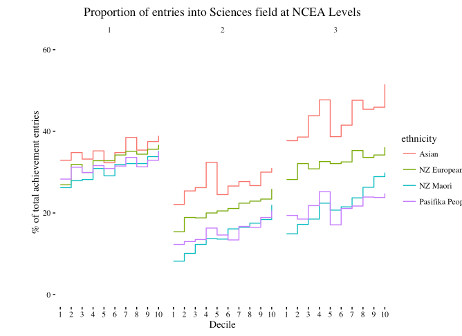

R and Data Journalism in NZ
A brief history
FiveThirtyEight, Upshot, Guardian data blog, ProPublica....Herald Insights🤔
What is data journalism
Data is integral to the story being told
"Empirical social science on deadline" - FiveThirtyEight
“You have to be like the worst tabloid newspaper in the front and the Academy of Science in the back.” ~ Hans Rosling
Why data journalism
Buzzword
Can be helpful - people might even hire you,without really knowing why
Method - data as a source
End product - visualisation
Writing code as a journalist
The business question
Why do news organisations do this?
It works*
If done well, correctly**
That's kind of hard
What we're trying to deliver
Where R fits in my workflow
R is central to data journalism worldwide
- Cleaning up data
- Exploratory analysis
- ggplot
- Sharing analysis and code
Example - NCEA standards data
That looks far too ideal
 R Notebook
Storing code
Revisiting analysis
Reproducibility
R vs Excel vs pre-built charts/vis
Prototyping visualisation
 Open work
restructureData <- function(df, type, category) {
column_names <- c("area","sub-area",as.character(seq(as.Date("2009/1/1"), as.Date("2016/9/1"), "months")))
names(df) <- column_names
df <- df %>% gather('date','count', -area, -`sub-area`) %>%
mutate(date = as.Date(date), count = as.numeric(count))
df[is.na(df)] <- 0
df <- df %>% mutate(type=type, category=category)
df
}
ggplot %>% print()
Sharing analysis with the newsroom
Challenges
Whose analysis is it anyway?
What did audience get out of it?
How do you know a visualisation works?
Who rejects ideas?
Hazards of statistical thinking in a newsroom
'How do you know it's true?'
'We wrote a story about it'
Let me be blunt here: If your level of numeracy is so abysmal, you aren't qualified to be a professional journalist. I know it may hurt to read this, but it's the truth. Nobody who lacks a working understanding of math, statistics, and scientific reasoning can properly inform the public.~ Alberto Cairo, Source
A harder problem...
..than learning how to code or run models
What is frequently overlooked, in midst of data, code and visualisation is the ability to think and argue.
It's hard to tell truth.
But sometimes it's harder to not publish a lie.

The problem is not the failure to cite quantitative evidence. It’s doing so in a way that can be anecdotal and ad-hoc, rather than rigorous and empirical, and failing to ask the right questions of the data.~Nate Silver